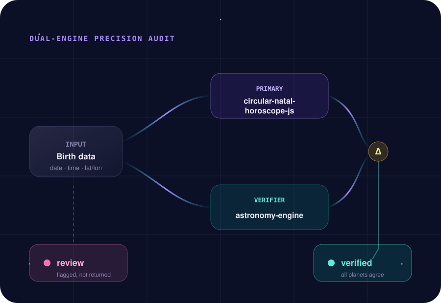

It just works
npx -y astral-mcp and you are calling charts. No OAuth, no account, no birthplace database to install.
astral.delx.ai · open source · local-first
Astral MCP is a local-first bridge that gives MCP-aware agents real astrology: natal charts, transits, synastry and moon phases. Every chart is computed by one ephemeris and independently re-derived by a second, so your agent reasons over verified placements, not silent errors. No API key, no account.
npx -y astral-mcp
The product idea
Most astrology libraries are fragile single-engine wrappers and most "astrology APIs" want a key and a subscription. Agents need something they can trust and call instantly.
npx -y astral-mcp and you are calling charts. No OAuth, no account, no birthplace database to install.
Every natal chart is re-derived planet by planet by a second ephemeris. Disagreements beyond tolerance are flagged review, never returned silently.
Astral MCP returns structured data only. Your model writes the reading, so the interpretation matches your agent's tone.
Data availability
The computation core is ported from the Alkhemia app and kept framework-free. Here is exactly what ships, what is planned, and what is out of scope by design.
Planets (Sun–Pluto), Ascendant, MC/IC, houses, major aspects with orb and applying/separating, chart signature (dominant element, modality, patterns, stelliums), retrogrades and timezone/DST handling.
Lunar nodes, Chiron, asteroids, fixed stars and minor aspects are on the roadmap, not yet shipped.
Interpretation text is intentionally excluded. Astral MCP returns structured data; the calling model writes the reading.
The 10 tools
Tool names are stable and agent-discoverable. House systems: placidus, koch, campanus, regiomontanus, topocentric, equal-house, whole-sign. Zodiacs: tropical and sidereal.
astral_compute_natal_chartFull natal chart — planets, houses, aspects, signature — precision-audited by default.
astral_current_transitsCurrent and upcoming transits to a natal chart, with the moon phase included.
astral_synastryCompare two charts, scored across harmony, chemistry, communication and growth.
astral_moon_phaseMoon phase, sign and illumination for any date — no birth data required.
astral_search_birthplaceGeocode a place name to latitude, longitude and timezone via OpenStreetMap.
astral_demoA fully-worked example chart (Greenwich, noon, Y2K) with its audit — no input, no network.
astral_capabilitiesWhat this server supports: house systems, zodiacs, bodies, aspects and limits.
astral_data_inventoryData domains and the recommended first calls for an agent.
astral_agent_manifestInstall and usage rules written for agents to follow on first run.
astral_connection_statusHealth check via a sample chart and a live dual-engine audit.
Dual-engine precision
The primary engine computes the chart; the verifier re-derives each planet's ecliptic longitude independently. A chart is verified only when every planet agrees within tolerance and lands in the same sign. Across a built-in accuracy suite spanning 1945–2010 and six timezones, the worst cross-engine disagreement is under 0.01°.
circular-natal-horoscope-js computes planets, houses and aspects.
astronomy-engine re-derives each planet's longitude from scratch.
review, so a wrong placement is never returned as fact.

Questions people ask first
A trustworthy astrology bridge should be explicit about setup, accuracy, and where the model's job begins.
No. Run npx -y astral-mcp and start calling charts immediately — no OAuth, no account, no birthplace database to install. The only optional network call is birthplace geocoding via OpenStreetMap.
Every chart is computed by circular-natal-horoscope-js and re-derived planet by planet by astronomy-engine. It is verified only when every planet agrees within tolerance and shares the same sign; otherwise it is flagged review.
Start with astral_capabilities, then astral_search_birthplace to resolve a city, then astral_compute_natal_chart. Go deeper with transits, synastry or moon phase.
No, by design. It returns structured data (planets, houses, aspects, signature, audit). Your model writes the reading, so it stays in your agent's voice. Pass the birthplace timezone, not the caller's, and include birth_time for an accurate Ascendant and houses.
Zero-setup install
There is nothing to authenticate. Add one MCP server to your client and start calling tools. Works in Claude Desktop, Cursor, Hermes and any client that speaks MCP over stdio.
Add the MCP config below to your client, reload, then call astral_demo to see a worked chart before sending real birth data.
Copy the delegation prompt below. It tells your assistant exactly what to install and how to verify the connection safely.
Jump to agent promptWant to try it from a terminal first? Run it over stdio, or switch to streamable HTTP with one environment variable.
npx -y astral-mcp # stdio (default)
ASTRAL_MCP_TRANSPORT=http npx -y astral-mcp # streamable HTTP on 127.0.0.1:3000Nothing is stored and no credentials exist. Every tool but optional geocoding runs fully offline.
Use it with Claude Desktop, Cursor, Windsurf, Hermes, OpenClaw or any client that supports MCP over stdio.
{
"mcpServers": {
"astral": {
"command": "npx",
"args": ["-y", "astral-mcp"]
}
}
}That is the whole setup. There is nothing to authenticate.
Call astral_demo for a fully-worked example chart (Greenwich, noon, Y2K) including its precision audit — no input, no network, no auth. It shows the exact payload shape before you send real birth data.
complete payload + per-planet precision audit (~6.9 KB)
same shape, derivable fields dropped
luminaries + Ascendant + signature + top aspects (~1.2 KB)
Prompts that feel natural
Your agent resolves the birthplace, computes the chart, and reasons over verified placements. Try these.
What's my natal chart? I was born 23 Feb 1989, 14:30, in Fortaleza, Brazil.
Any big transits hitting my chart this week? Use my birth data and tell me what to watch.
How compatible are we? Here are two birth datas — score our harmony, chemistry, communication and growth.
What phase is the moon in today, what sign is it in, and how illuminated is it?
Trust boundary
Astral MCP is stateless and computational. There are no credentials to leak because none exist, and the only data that ever leaves your machine is a place name — and only if you call geocoding.
Nothing is written to disk and no history is kept between calls.
No API key, no OAuth, no account. There is nothing to authenticate or rotate.
Every tool but optional geocoding runs without any network access.
astral_search_birthplace sends only the place-name string to OpenStreetMap.
For AI agents
If a non-technical user wants their assistant to install the bridge, this prompt gives the agent enough structure to proceed and verify safely.
Install the Astral MCP server for me.
Repository: https://github.com/davidmosiah/astral-mcp
npm package: astral-mcp (no API key, no account)
Add this MCP config to my client:
{ "mcpServers": { "astral": { "command": "npx", "args": ["-y", "astral-mcp"] } } }
After reloading MCP:
- call astral_agent_manifest and astral_capabilities to learn the contract
- call astral_connection_status to confirm the audit returns "verified"
- call astral_demo and show me the worked example chartFor builders
Built by David Mosiah for people building practical AI-agent systems. The astrology engine is ported from the Alkhemia app and kept framework-free, so the computation core in src/engine/ is easy to understand and reuse.
MIT licensed. Run the accuracy suite yourself with npm run test:accuracy and the full gate with npm test.
Open source astrology agents
Star the repo, inspect the engine, open issues or adapt the bridge for your own agent workflow.